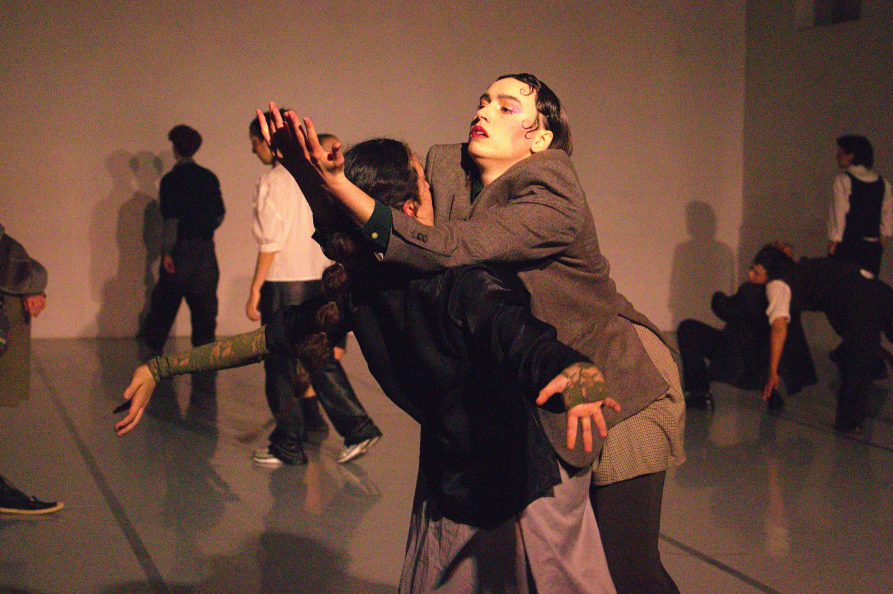
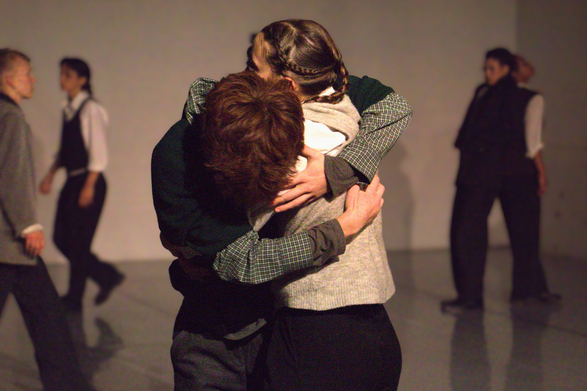
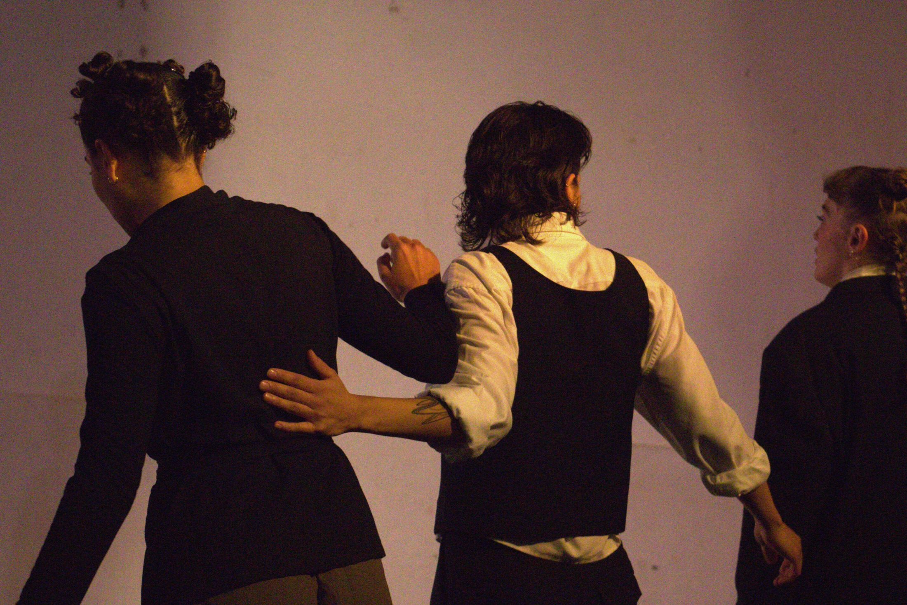
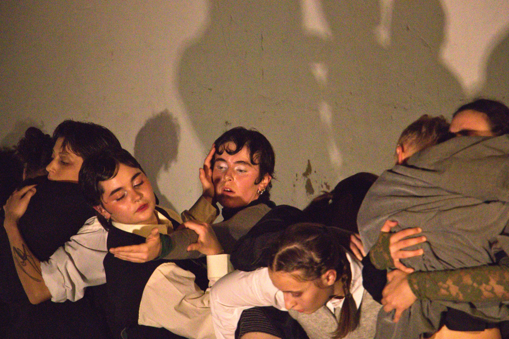

© Maëlys Simons & Teodora Vuijkov
Lentidão focuses on time and its relationship with experiences, memory, and affection. In it, time is captured as a tool of resistance, and deceleration emerges as a possible language of affection, relationship, and listening.
Bypassing the hustle culture, the rush, and the fast-paced content, this piece proposes another approach to time: inhabiting it, rather than chasing it. In a reality marked by acceleration, slowness becomes almost subversive: an act of resistance, a proposal.
A piece created with and for the students of Performact during the 2025-26 academic year.
Direction and Creation - Juliana Fernandes
Co-creation and Performance - Aenor Mauny, Alicia Marcuzzi, Arthur Houdret, Elisabeth Bonk, Franziska Neidhart, ilayda Bal, Kinga Kuboszek, Leïla Lucas, Leo Athanasiou, Luna Le Moine, Manon Gouvenel, Noam Daus, Raga Bheri and Romane Rivollier
Light Design and Operation - Clemence Peytoureau
Photography - Maëlys Simons and Teodora Vuijkov
19th December 2025




© Maëlys Simons & Teodora Vuijkov